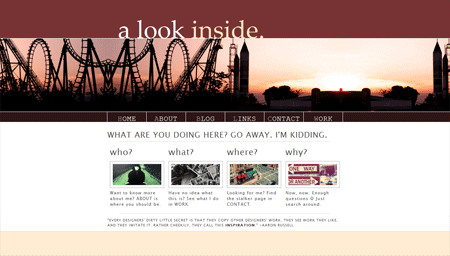

THIS PERSON'S FAVORITE WEBSITES
Want to see some interesting websites? You came to the wrong place. Actually, it's the right place, but still in progress. Please check back some other time or move along to another page, and hopefully it's a completed page!

Personal Site 2.0
Why wouldn't I like my own website? I mean honestly, it's my first design that I feel is the most "solid". In the past, I have actually attempted some medium difficulty websites, but they either got lost, are incomplete, or I just don't feel they are as solid.